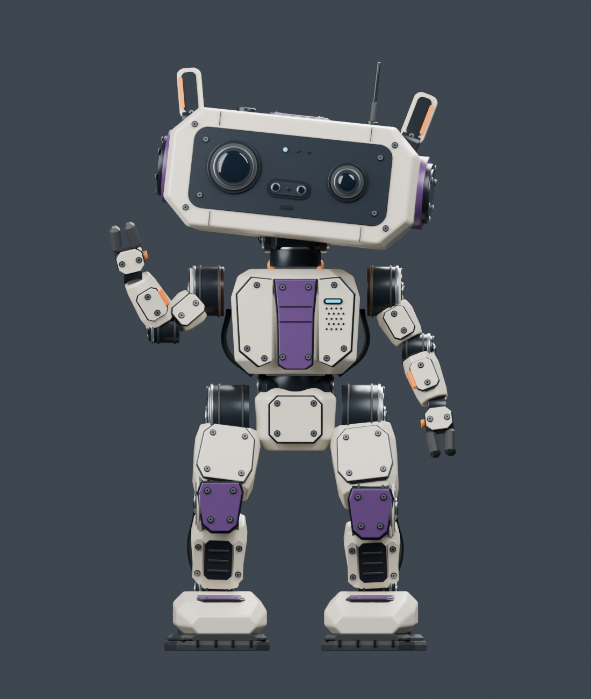
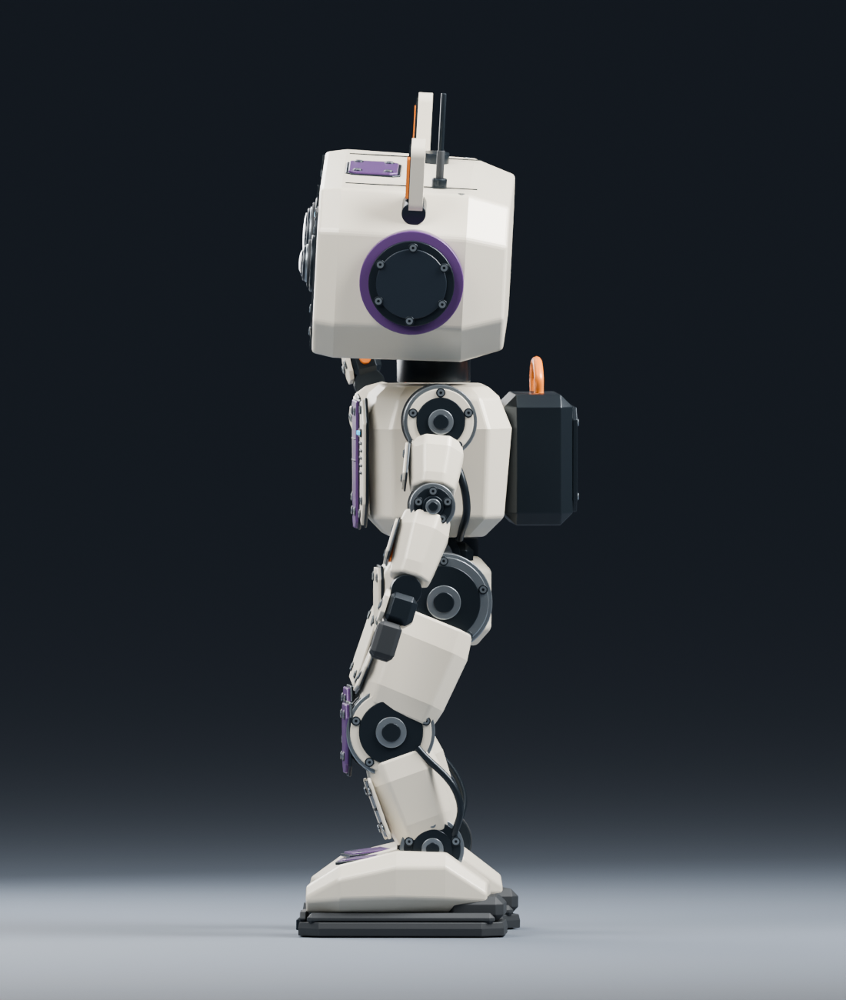
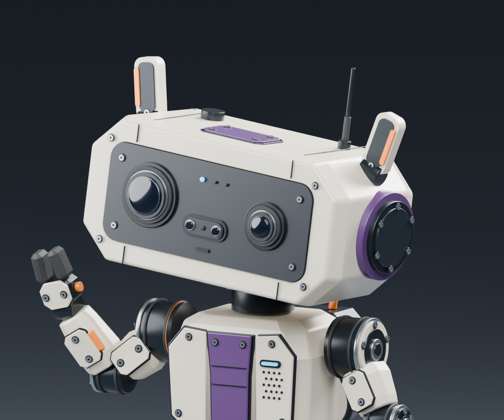
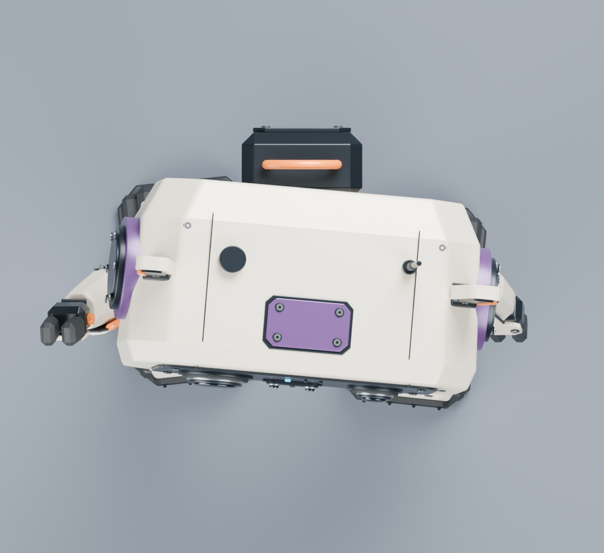
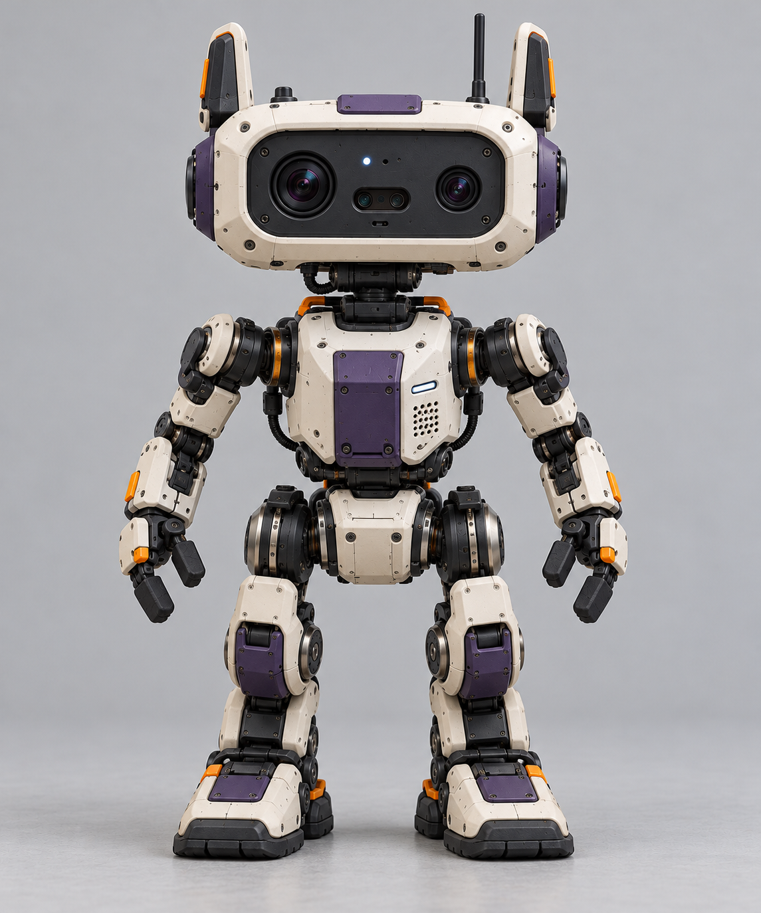

Rev D · Reference-led proportions: lower hips, tapered chest and pelvis, shorter sculpted legs, smaller recessed optics and a central sensor capsule.

Front · A taller, narrower chest and distinct pelvis replace the compressed torso. Shorter leg links retain large joint discs and shaped armour.

Side · Sloping insteps, slimmer forearms, a neck gimbal and rounded rear head profile follow the supplied side view. Pose remains illustrative.

Head detail · Smaller dark optics, a central sensor capsule, a thicker ivory bezel, purple side housings and a slim antenna. Frames 1–73 retain the idle head gesture.

Top · Broad shell, purple access hatch, side pods and rear battery pack.

Your supplied front reference. It guides the silhouette and relative proportions; it is not a dimensional engineering drawing.
About 547 mm tall; the idle gesture stays below 550 mm. Proportions are visual estimates from your references. Your approved Rev C is saved separately. Physical fit, print construction and walking remain unverified.